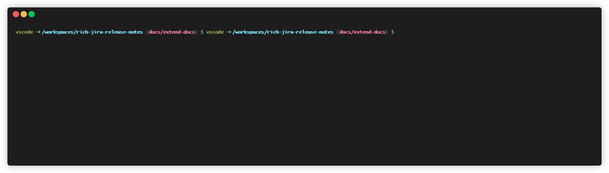

rich-jira-release-notes 📄🤖

Made with TerminalizerIntroduction
As of today Jira is not able to export auto-generated release notes with assets such as images (see: Atlassion Support - Create release notes).
The CLI provided by this repository is able to do so and serves as a workaround until Atlassian provides this functionality out-of-the-box.
Installation
- Install Python 3.12
-
Create a virtual environment:
python3.12 -m venv ./.venv -
Activate the virtual environment:
./.venv/scripts/activate -
Install the CLI:
pip install git+https://github.com/TrisNol/rich-jira-release-notes.git@develop -
Check that the CLI is available:
rich-jira-release-notes version
Usage
-
Create an
.envfile of the following structureJIRA_URL=<your_domain>.atlassian.net JIRA_USER=<mail of the service/human user providing the token> JIRA_TOKEN=<PAT>Alternatively, you can provide those values as regular env. variables
-
Create a Jinja template in your project (Example). You will have access to a variable called
issuesrepresenting a list of objects of typeJiraIssue:python class JiraIssue(BaseModel): id: str # Jira internal ticket ID key: str # Ticket number (<project>-<number>) fields: dict[str, JiraField] # Ticket fields retrievedAJiraFieldexposes an attributevalueof different datatypes depending on thetypeof field selected:JiraFieldType.TEXT: Contains raw textJiraFieldType.RICH_TEXT: Contains rich text in Markdown formatJiraFieldType.CHECKBOX: Contains a list of strings representing the ticked checkboxes of the field
-
Construct a JQL query fitting your use case; example:
project = <Jira_Project_Key> AND fixVersion = "<Release_Version>"Replace placeholders like so:
project = DEV and fixVersion = "4.2.0" -
Determine the fields to export; example:
Summary, Release Notes -
Run
sh rich-jira-release-notes generate 'YOUR_JQL_QUERY' fields="YOUR_FIELDS"Example:
rich-jira-release-notes generate 'project = DEV and fixVersion = "4.2.0"' "Summary, Release Notes, Checkboxes" -
Retrieve release notes from the
dist/directory